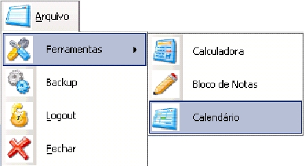

|
|
||||
|
O MENU ARQUIVO O Menu Arquivo se encontra na parte superior esquerda
da tela
principal e provê um acesso rápido a funções externas e ferramentas utilitárias
do SICEP 1.0, abaixo você pode conferir o detalhamento de cada uma dessas ferramentas
e como acessa-las. 
A CALCULADORA
A Calculadora do SICEP 1.0 é a mesma do Windows XP e pode ser acessada
apenas clicando se sobre seu nome dentro do menu ARQUIVO>FERRAMENTAS.
O BLOCO DE NOTAS
O Bloco de Notas é um editor simples, voltado principalmente para
quando se tem a necessidade de fazer notas rápidas ou textos que não necessitem
de formatação mais complexa.
O CALENDÁRIO
Para ver rapidamentes a data, os dias do ano, as semanas
e tudo que um bom e prático calendário tem, não é preciso sair do SICEP 1.0, clique
sobre seu ícone no menu ARQUIVO>FERRAMENTAS e acesse. Use as setas no topo para
trocar de ano para ano(ele possuí todos os anos existentes), clique sobre o dia
para obter informações detalhadas sobre a data pedida ou ainda clique sobre o dizer
"Hoje" na parte inferior para ser guiado ao contexto da data atual.
|